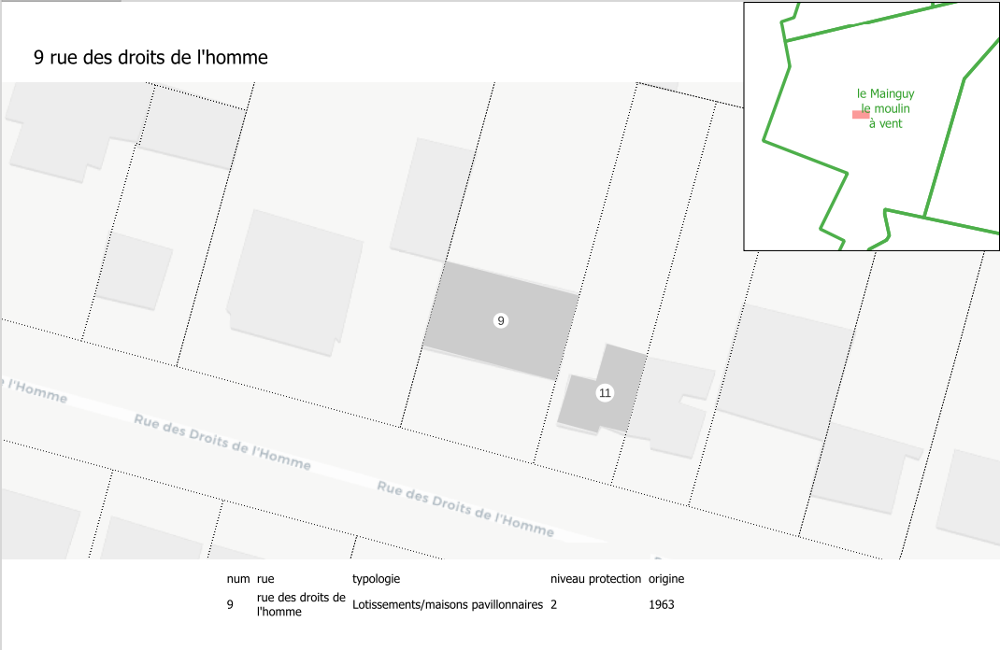
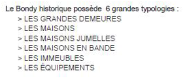

La première saisie va permettre la création d’un atlas simple sous QGIS à partir de l’export d’overpass turbo, qui permettra de faire une 2e saisie et un atlas plus complexe.
2 Atlas
Tip
Voir la dernière procédure Faire un atlas sous QGIS

Savoir-faire QGIS
atlas (avec expression pour le nom de la page)
table attributaire (avec filtre sur l’item de l’atlas)
aperçu
thèmes
3 Bilan de la saisie
Quelle est la différence entre le nombre de contributions saisies et le nombre de contribution réelle ?
3.1 Nb de contributions saisies
Code
nb <-read.csv("data/nbSaisie.csv")saisie1 <-sum(nb$nb.de.batiments.traités,na.rm=T)saisie2 <-sum(nb$nb.bat.traités.2e.saisie, na.rm=T)saisie3 <-sum(nb$X2e.saisie..avec..tags.complémentaires., na.rm=T)total <-t(data.frame(saisie1, saisie2, saisie3))barplot(total [,1], names.arg =rownames(total), col ="antiquewhite", border =NA, main =paste0(sum(total), " contributions annoncées"))
Comment récupérer les données des fiches, et notamment les photos ?
4.5.3 Nouveaux éléments
Observer un nouvel élément de patrimoine
Code
table(citaviz$Couche)
Bâtis à protéger (éléments et ensembles)
195
Linéaires (sentes, murs et rues)
4
Il y a également une nouvelle typologie (cf le cahier des recommandations architecturales dans 7.4.19 Annexe anciennes fiches communes.pdf, p. 943)

5 Nouvelle saisie
Cette fois ci, on travaille directement sur le calque de données, on cherche la fiche avec l’index et on tague tous les éléments possibles à l’adresse. On travaille par rue puisque les fiches sont par rue.
Code
index <-read.csv("data_raw/indexPatrimoineCorrige.csv")head(index)
texte livret num
1 Rue de la liberte 11 1 1
2 Rue de la liberte 13 1 2
3 Rue de la liberte 15 1 3
4 Rue de la liberte 15bis 1 4
5 Rue de la liberte 1? 1 5
6 Rue de la liberte i9 1 6
Code
tab <-table(index$livret)fin <-NULLfor (i inc(1:3)){ tmp <-seq (1, tab [i]) fin <-c(fin, tmp)}index$numFiche <- finwrite.csv(index,"data_raw/indexPatrimoineNumPage.csv")
En bilan, toujours le nombre de bâtiments et les problèmes rencontrés dans des fiches spécifiques particulièrement fournies.
6 Vérification
Requête overpass sur le(s) nouveau(x) tag(s) et comparaison avec l’annoncé.
Pour la qualité, on recherche avec les expressions régulières
7 Atlas complexe (CARTE 5)
On cherche à se rapprocher le plus possible du modèle de fiche.